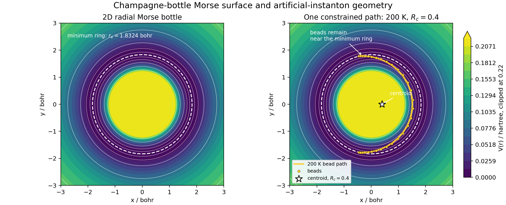
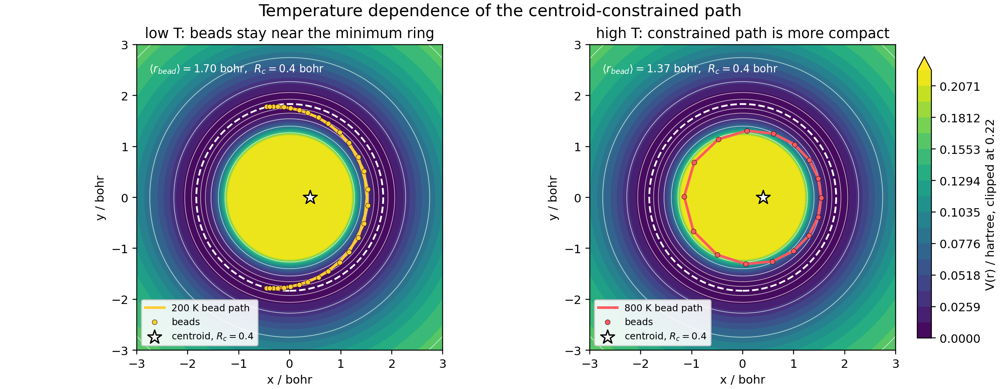
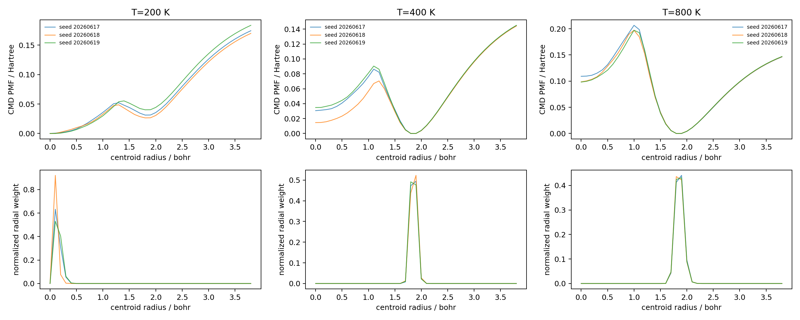
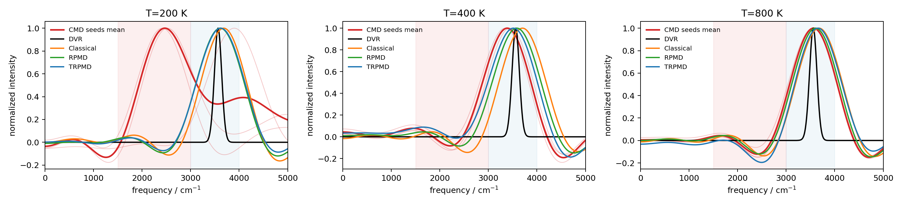
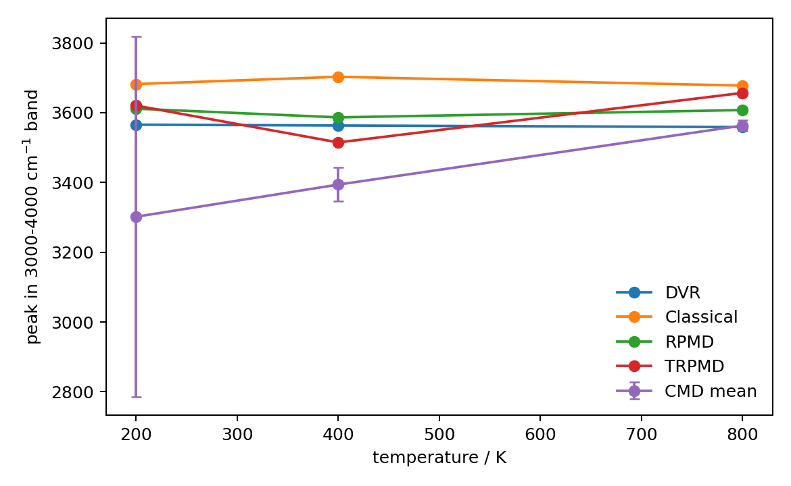
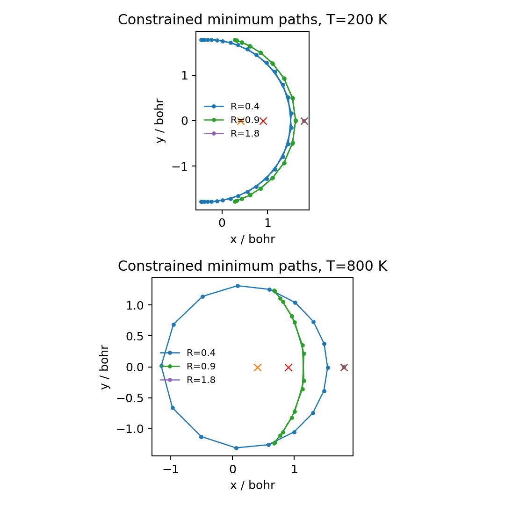

Model Calculation
CMD II: Curvature Red Shift in a 2D Morse Bottle
The first CMD note used centroid potentials of mean force as a constructive tool: a path-integral free-energy surface softened a one-dimensional avoided crossing and improved one Ehrenfest benchmark. This second note is deliberately the opposite. It uses the same centroid-force logic on a curved two-dimensional surface and shows a known failure mode: the CMD centroid can find an artificial instanton basin, flatten its effective radial PMF, and red-shift the stretch spectrum even though the direct quantum benchmark does not.
Benchmark Question
The target is the CMD curvature problem discussed by Trenins and Althorpe for a two-dimensional "champagne-bottle" Morse model. The surface is one-state and isotropic,
The parameters are \(r_e=1.8324\), \(D_0=0.18748\), \(\alpha=1.1605\), and \(m=1741.05198\), all in atomic units. The physical minimum is a ring, not a point. That ring is harmless for exact quantum dynamics, but it is dangerous for centroid-constrained imaginary-time paths because many bead configurations on the ring can have a small Cartesian centroid.


Observable
A Cartesian velocity autocorrelation mixes the radial stretch with low-frequency rotation around the bottle. I therefore use the radial stretch velocity as the observable:
for trajectory methods, and \(\dot r=i[H,r]\) for the DVR benchmark. The reported spectrum is the Fourier transform of the Kubo radial velocity autocorrelation. This is a natural observable: if CMD really changes the radial stiffness of the centroid PMF, it should show up as a red shift of the radial stretch band rather than as an artificial population threshold or a hand-picked event.
Direct DVR Reference
The benchmark is not a wavepacket launched from one hand-picked initial condition. It is a thermal density-matrix calculation. For a radial operator in an isotropic 2D potential, the DVR implementation uses an angular-momentum block decomposition and evaluates the Kubo correlation in the energy basis:
Numerically this is a direct density-matrix benchmark: diagonalize each radial partial-wave block, form the Kubo thermal weights, and sum the angular degeneracies. That matters because the CMD artifact is a finite-temperature equilibrium artifact of the centroid free energy; a single scattering packet would not be testing the same object.
CMD Mean Force
The CMD/CA surface is computed from a centroid-constrained path-integral ensemble. For a target vector centroid \(\mathbf R_c\), the sampled paths obey
The Euclidean action is
Metropolis moves displace one bead, then translate the whole path back to the requested centroid. The radial CMD mean force is the constrained average of the bead-mean physical force:
By rotational symmetry, the force is projected along the centroid direction and integrated to a radial PMF \(A(R_c)\), with \(dA/dR_c=-F_c(R_c)\). The CMD dynamics then propagates the centroid on this PMF. The artificial-instanton diagnostic is only a way to visualize low-action constrained paths; it is not used to redefine the force.
Why the Red Shift Happens
In a compact ring polymer, every bead sits near the centroid and the CMD mean force resembles the physical Morse force. At low temperature, however, the imaginary-time polymer is long enough to bend around the minimum ring. A small centroid radius no longer means that the bead positions sit at small \(r\); it can mean that the beads are distributed along a curved arc of the real minimum ring. The centroid is then artificially cheap.
The radial frequency of CMD motion is controlled by the curvature of the centroid PMF,
Once the constrained ensemble collapses into the artificial-instanton basin, \(A(R_c)\) becomes too flat in the radial coordinate. A flatter PMF means a smaller effective frequency, hence a red-shifted radial stretch spectrum. This is the same CMD force formula that was useful in Part I; the difference is the multidimensional curved geometry of the centroid constraint.

Controls
I compare five objects. DVR is the direct-density-matrix Kubo reference. CMD/CA is centroid dynamics on the constrained PMF above. The "classical EH" curve is the one-state classical trajectory limit sampled from the thermal ensemble. RPMD and TRPMD use full ring-polymer thermal sampling and centroid radial velocity correlations; they are included as path-integral trajectory controls that do not collapse the dynamics onto the centroid PMF.

Medium Validation Numbers
The table below uses the 3000-4000 cm\(^{-1}\) stretch band for peak reporting, matching the stretch region used in the literature comparison. CMD entries are seed means and standard deviations over three constrained-PIMC realizations. The "soft fraction" is the positive spectral area between 1500 and 3000 cm\(^{-1}\), divided by the positive area up to 5000 cm\(^{-1}\).
| T / K | DVR peak | CMD peak | Classical peak | RPMD peak | TRPMD peak | CMD soft fraction | CMD \(P(R_c<0.4)\) |
|---|---|---|---|---|---|---|---|
| 200 | 3565.76 | 3301.95 +/- 517.20 | 3682.19 | 3611.63 | 3620.38 | 0.515 +/- 0.438 | 0.99996 |
| 400 | 3563.38 | 3394.00 +/- 48.34 | 3702.97 | 3586.68 | 3514.86 | 0.165 +/- 0.044 | 1.83e-07 |
| 800 | 3558.89 | 3563.28 +/- 14.77 | 3677.82 | 3607.66 | 3656.85 | 0.070 +/- 0.023 | 2.13e-19 |

What Is Decisive Here?
The decisive part is geometric, not just a lucky numerical peak. The exact thermal DVR spectrum does not show a comparable low-temperature red shift. RPMD and TRPMD remain in the same stretch region as the direct quantum benchmark. CMD, in contrast, develops a low-\(R_c\) centroid distribution and a large soft-frequency spectral fraction at 200 K. Those three facts are mutually reinforcing: the wrong PMF geometry creates the wrong dynamical stiffness.
There is also an important limitation. The 200 K CMD spectrum is broad and seed-sensitive, so a single maximum is a fragile scalar summary. I would not claim that this medium run is a production-level point-by-point reproduction of every published curve. I would claim that it reproduces the mechanism of the curvature problem in Toymodel: constrained centroid sampling opens an artificial-instanton basin, and CMD turns that basin into a red-shifted radial stretch response.

Code and Data
- cmd_curvature_validation.py is the Toymodel validation driver used to build the DVR, CMD, classical, RPMD, and TRPMD comparison tables and spectra. Set
TOYMODEL_ROOTto a Toymodel checkout when running it outside the repository. - run_cmd_curvature_smoke.py provides the shared spectrum, trajectory, and plotting helpers used by the validation driver.
- cmd_curvature_potential_surface.py regenerates the 2D potential-surface figure and the low-/high-temperature constrained-path comparison.
- cmd-curvature-method-summary.csv stores the method-level spectral metrics.
- cmd-curvature-cmd-seed-summary.csv stores the CMD seed means and standard deviations.
References
The conceptual target is the CMD curvature problem of Trenins and Althorpe, J. Chem. Phys. 149, 014102 (2018). The CMD centroid-force construction follows the centroid density and centroid molecular dynamics framework of Cao and Voth, while the broader comparison to RPMD is best understood through the Matsubara-dynamics analysis of CMD and RPMD approximations.